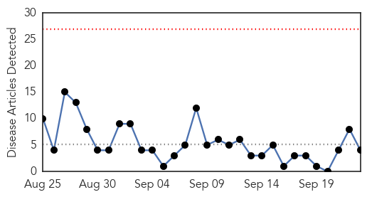
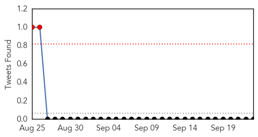
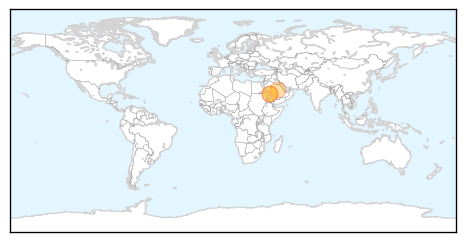
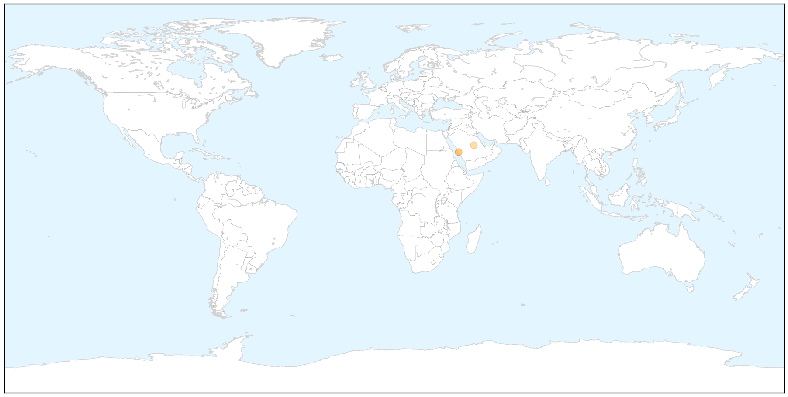

MERS
30-Day Web Trend
0 alerts, 0 warnings

30-Day Twitter Trend
2 alerts, 0 warnings

Article Locations

X

Article Confidences

Top Articles:
Top Tweets:
-
No tweets found for Sep 23, 2015
Influenza
30-Day Web Trend
6 alerts, 1 warnings

30-Day Twitter Trend
3 alerts, 0 warnings

Article Locations

Article Confidences

Top Articles:
- 0.997
- Flu Season almostHere
- 0.993
- The Flu is Back: Experts Say It's Time to Get Your Annual Vaccine
- 0.980
- Two cases of influenza prompt concern in Gallatin Co.
- 0.979
- Drive-through flu shot clinic held in Great Falls - KRTV.com
- 0.965
- 3 flu cases confirmed in Bernalillo County
- 0.949
- New pig flu strain may be going undetected on farms
- 0.946
- Illinois Department of Public Health recommends mass flu vaccina
- 0.887
- Number of Influenza A patients up in Chitwan
- 0.791
- Flu vaccine promises to be far more effective this year
- 0.731
- Information about avian flu important for backyard chicken owners
- 0.637
- US plan to suffocate poultry in AI outbreaks condemned
- 0.593
- Possible contributor to the virulence of the 1918 flu pandemic discovered
- 0.538
- Free flu shot clinics scheduled in Glenn County
Top Tweets:
-
No tweets found for Sep 23, 2015